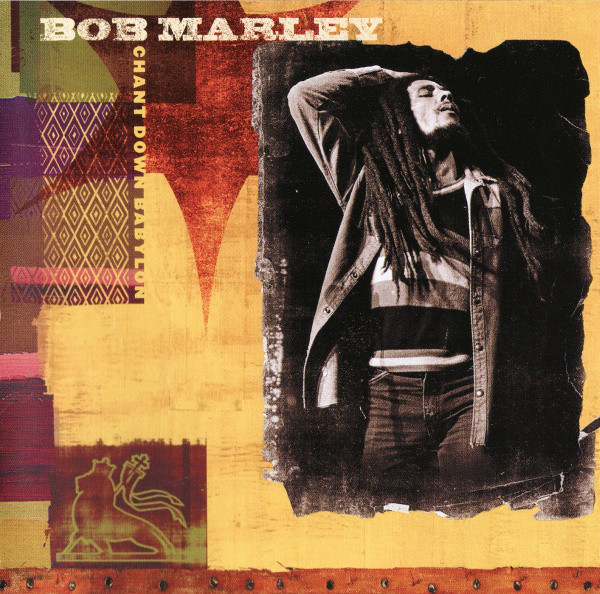

CD
Chant Down Babylon
Bob Marley
Media: — · Sleeve: —
—
Personal
Discogs SuggestedCA$25.80
Discogs MedianCA$25.80
Discogs HighCA$25.80
- Physical Copy ID
- BB-CD-1933
- Year
- 1999
- Label
- Tuff Gong
- Catalog #
- 546 404-2
- Country
- Europe
- Genre / Style
- Hip Hop, Reggae · Ragga HipHop, Roots Reggae